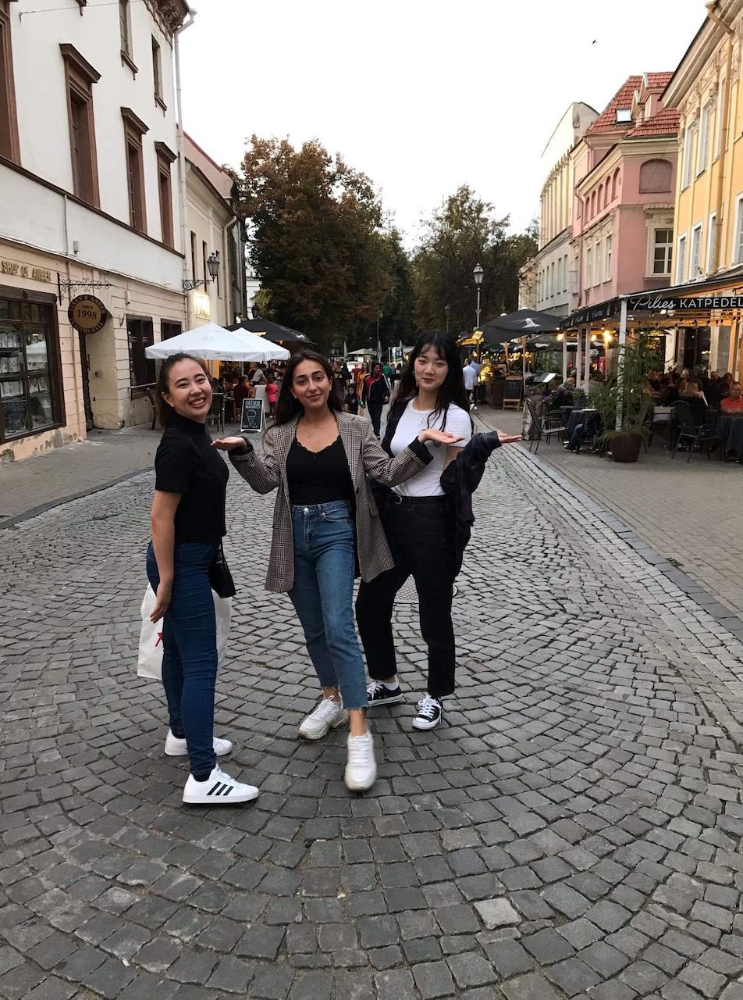
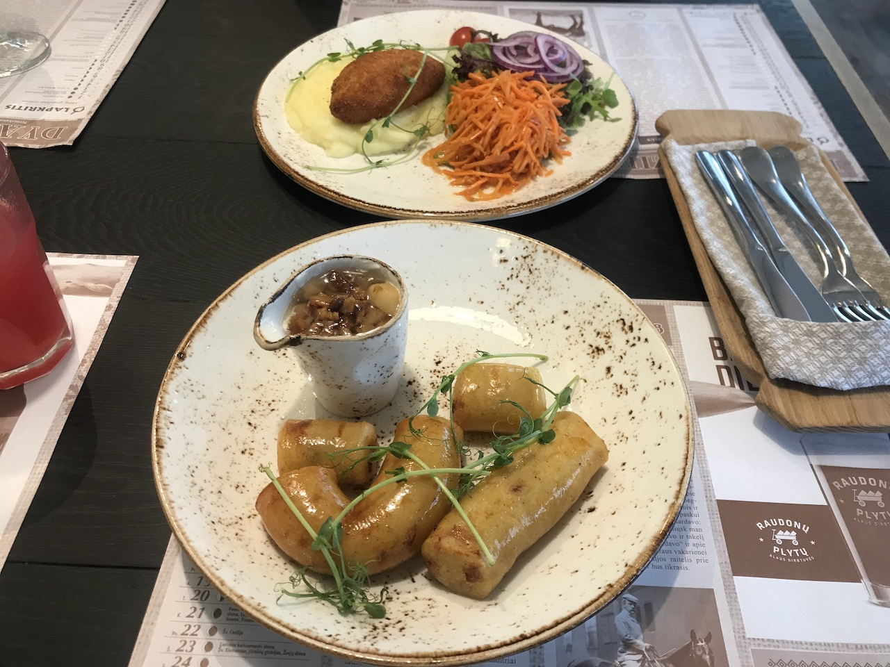
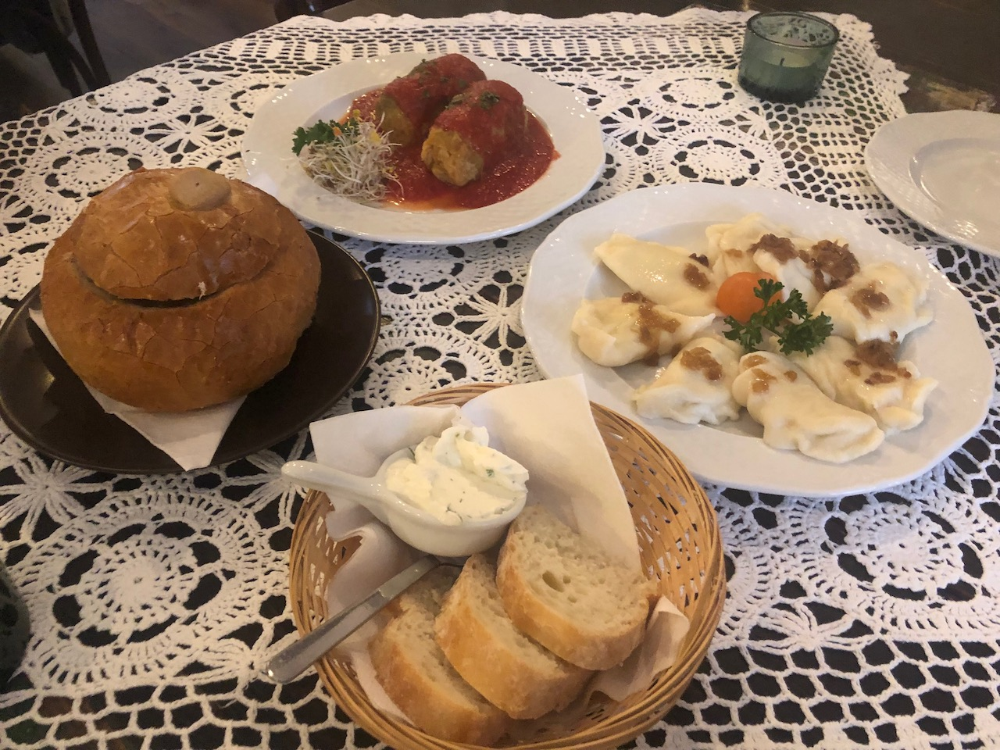
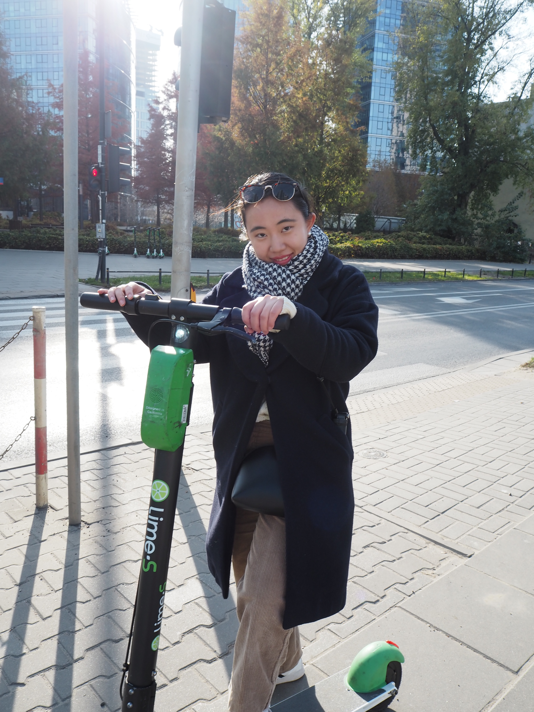
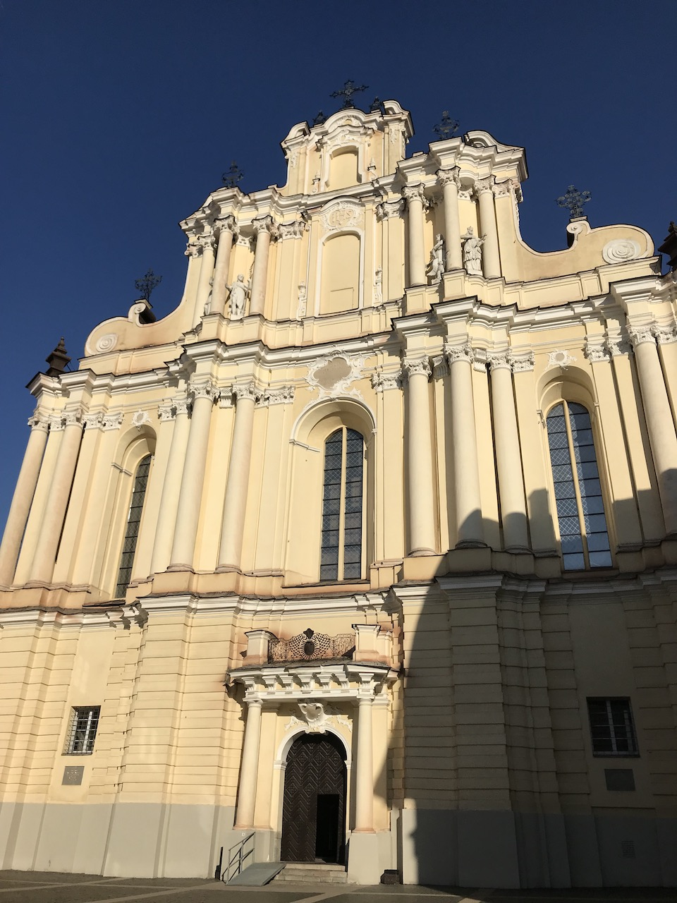
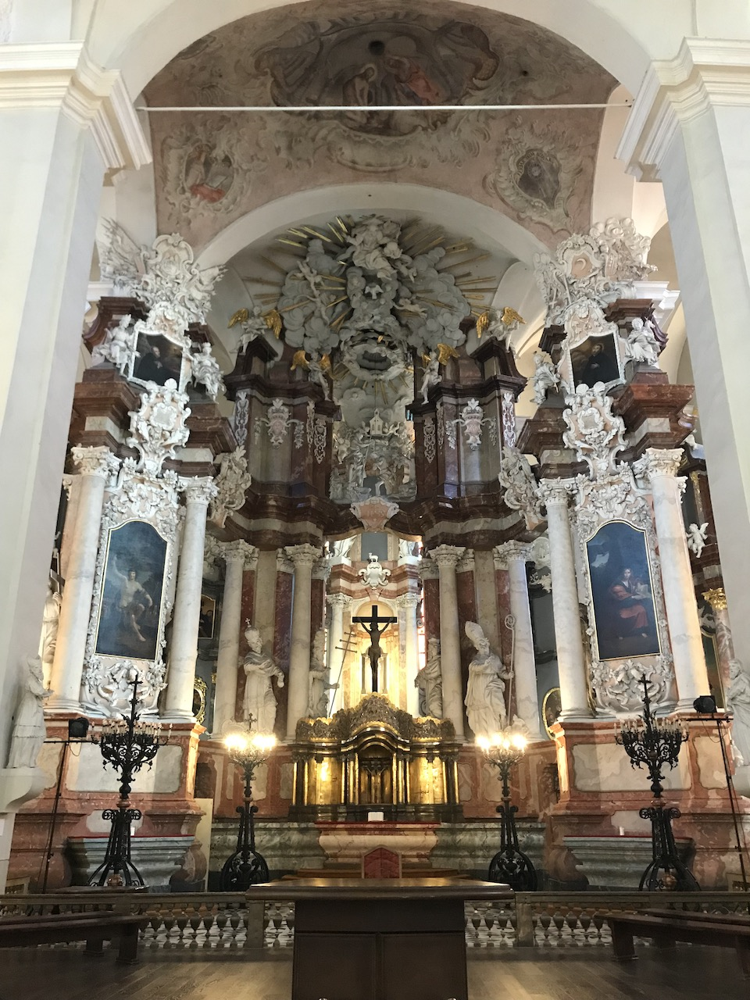

研究テーマとは少し逸れてしまいますが、せっかくなので道用ゼミの皆さんにも
リトアニアを感じてもらいたいと思ったので、暇なときにでも覗いてください。
折り返し地点に到達したので、今までの生活の振り返りを残しておきます。
こちらでの生活が始まって２ヶ月半が経ち、生活にも慣れてきました。
平日は学校で授業を受け、休日は友達と旅行へ行ったり、映画を見にいくなどして過ごしています。
週１でバレーボールのサークルに参加したり、グループで企業の課題を解決するインターンシップに参加もしています。
ルーティーンワークになってきてはいますが、新しい友達ができたり、日々何かしら新しいことがあるので充実した生活を送れています。
今回第二弾のリトアニア生活では、リトアニアで暮らすに当たって感じた事を書き残しておこうと思います。

こちらはカウナスというリトアニア第二の都市へ旅行へ行った際の写真です。
ご覧の通り、最近は毎日この天気（曇天）です。そろそろ太陽が恋しい、本当に。
リトアニア人は鬱になりやすい、暗い性格で、表情が無いという記事を出発前に読んだ事があり、その真相を現地人の友人に聞いてみました。
夏が終わると、地方に行けば行くほど、暗い表情、下を向きがちな人が多いらしく、この天気も１つの原因らしいです。
実際私が住んでいて、リトアニア人は暗い、無表情という風に感じた事はなかったのですが、
それは私が主に接しているリトアニア人は大学生であるという事、ビリニュス（首都）に住んでいるという事で、
そのようなリトアニア人の暗い部分には触れる事が無いからという事がわかりました。
一方で、リトアニア人の優しさ、親切さにも触れました
たとえば、バスの乗降時。
小さい子供を連れたお母さんが、ベビーカーと子供用の自転車を持ってバス停で待っていたところ、
同じくバスを待っていたおばさんが、そのお母さんに声をかけ、子供用の自転車を運んであげていました。
また別の日には、私が水を６本抱えてバスに乗っていたら、見ず知らずのおばあさんが、
降り際に私の腕を掴んで、席を譲ってくれました。
他にも、車椅子の人を助けてあげたり、道で転んでしまったおばあさんに近くにいた人全員が駆け寄ってあげたり、
同じ状況が東京で起きたらどうなるだろう・・・？と考えさせられました。
せっかくなので、留学生活の楽しい部分だけでなく、大変だと感じる事も正直に記しておきたいと思います。
今、私が一番ストレスとして抱えているのはプライベート空間が全くないことです。
ルームメイトとの関係は良好な方だと思いますが、やはり四六時中誰かと生活すると言うのは今までにない体験で、
何をするにも誰かの視線があるというのはやはり一定のストレスを感じます。
例えば寝る時間や、シャワーを浴びるタイミング、朝の準備。やはりルームメイトが寝ていたら気を遣うし、
逆に私が寝ていても話し声や電気の灯りで目が覚めることもあります。
ですがこの問題は共同生活には付き物だと思うので、図書館で1人で過ごす時間を作ったりして、
うまくこのストレスとも付き合っていくように心がけています。

（アゼルバイジャン人と韓国人のルームメイト）
10月下旬、ポーランドのワルシャワへ旅行へ行きました。
そこで、ポーランド人の友人が教えてくれた Invisible Exhibitionへ行ってきました。
（写真は撮り忘れてしまったので、上のサイトを見てみてください。）
この施設は、盲目の方の生活を実際に体験してみるという体験型の博物館です。
私たちは、英語のガイドが必要だったのであらかじめ予約して行きました。（1人約700円）
この博物館でガイドを務めている方は全員、視覚障害者の方です。
時間になり、到着すると、真っ暗な部屋に放り込まれます。
本当に何も見えない部屋に入るのは初めての体験だったので、ただ立っているだけでとても恐怖を感じたのを今でも鮮明に覚えています。
そしてガイドの方の案内に沿って、真っ暗な部屋を進んでいきます。
はじめは、先に何があるかもわからない状態で進むのが非常に怖く、
壁に沿ってゆっくりと歩くことで精一杯でした。
そして案内されたのは様々な家具が置いてある部屋。
手で触りながらここにキッチンがある、ここにテレビがあるなど、一つ一つ物を確認して行きます。
暗闇だと、部屋の大きさが全く想像できません。
触れば、家具、電化製品など把握はできるものの、レイアウトが全く想像できず、同じ場所を行き来してしまったり、
自分がどこに向かっているのかも分からない状態でした。
そしてドアを抜けると次は外に出ます。（もちろん暗闇ですが）
バイクが置いてあったり、鳥のさえずりや車が走る音が聞こえたり、視覚以外の全神経を研ぎ澄ませて道を進んでいきます。
もしも自分が実際に何も見えない状態で、外を歩くことを考えるとゾッとしました。
突然自転車が通り過ぎたり、道路に何かモノが落ちていたり、普段何気なく避けられる危険が避けられない状況は非常に怖いと思いました。
このようにして、暗闇で様々な環境を体験して行きます。
その中で、盲目の人を助ける時の方法も学びました。
実際にガイドの方が先導してくれたのですが、1人で歩く時よりも100倍安心して前に進むことができた気がします。
最後にガイドの方にいくつか質問してみました。
①何をする時が一番大変だと感じるか？
ー新しいことを学ぶ時が大変。
②塩と砂糖の見分け方はどうしているか？（誰か忘れちゃったんですけど、誰か塩のパッケージ作ってましたよね。。。？汗）
ー塩には魚のシールを、砂糖には亀のシールを貼って区別している。
私たちのガイドをしてくれた方は同じく盲目の奥さんがいるらしく、生活は全てオーガナイズされているそう。
③公共トイレ、どうやって使う？（これも以前、ゼミで出た話題だったような。。。？）
ーまず、近くにいる人に女性トイレと男性トイレを聞く。
そしてトイレを使用する前にトイレットペーパーをあらかじめ用意してから入る。
（これはトイレに限らず、）座る前は必ず手で座面を確認してから座る。
トイレに関しては、小学生の頃、うまくできずに周りの子供に笑われたこともあったそう。。。
この博物館での体験は私にとって全てが初めての経験で、非常に刺激的でした。
普段自分が置かれていない立場から問題を見つけ、解決策を提案するのは、難しいことです。
ですが、たとえ短い時間でも実際に自分が経験してみるとまた新しい価値観が生まれることを身を以て感じました。

リトアニア料理、本当になんでもジャガイモ使います。でも私芋大好きなんで、最高です。
芋のソーセージ、すごく美味しかった。

左から順に、ジュレックスープ、ロールキャベツ、ピエロギです。
ジュレックスープはキノコや野菜がたっぷり入ったスープがパンをくり抜いた器に入っています。
ピエロギは水餃子のような食べ物！中はひき肉ではなく、芋とチーズ！美味しい！

ヨーロッパ、本当にどこにでもあります、この電動スクーター。私が乗ったのはポーランド。
アプリに登録してQRコードを読み込むと電源が入ります。
このロックを解除した時点で80円、その後1分ごとに15円ずつ加算されていきます。
簡単に乗れるけど、早い！歩道を時速２０キロ以上出る乗り物で走るって結構危険！
あと、意外に高い！（ポーランドは他の交通機関が安いので高く感じる）
使い終わったらどこで乗り捨てても構わないので目的地に到着したら場所を気にせず放置できる。
果たして、日本でも普及するのでしょうか。。。？


リトアニア生活も折り返し地点を迎え、残り２ヶ月弱となりました。
残されたリトアニアでの生活を大切に、（ゼミの研究も本当はもっとちゃんと進めたい。進めます。宣言。）
日々吸収できるように、日常がマンネリ化しないように、まだまだ色んなことに挑戦していきたいです。